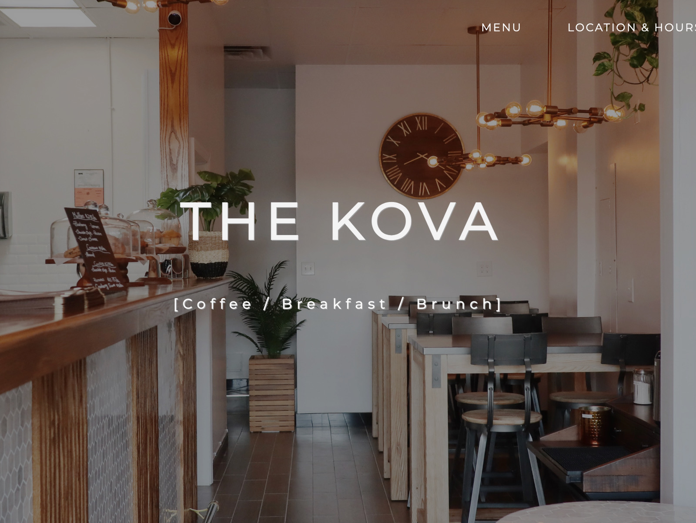
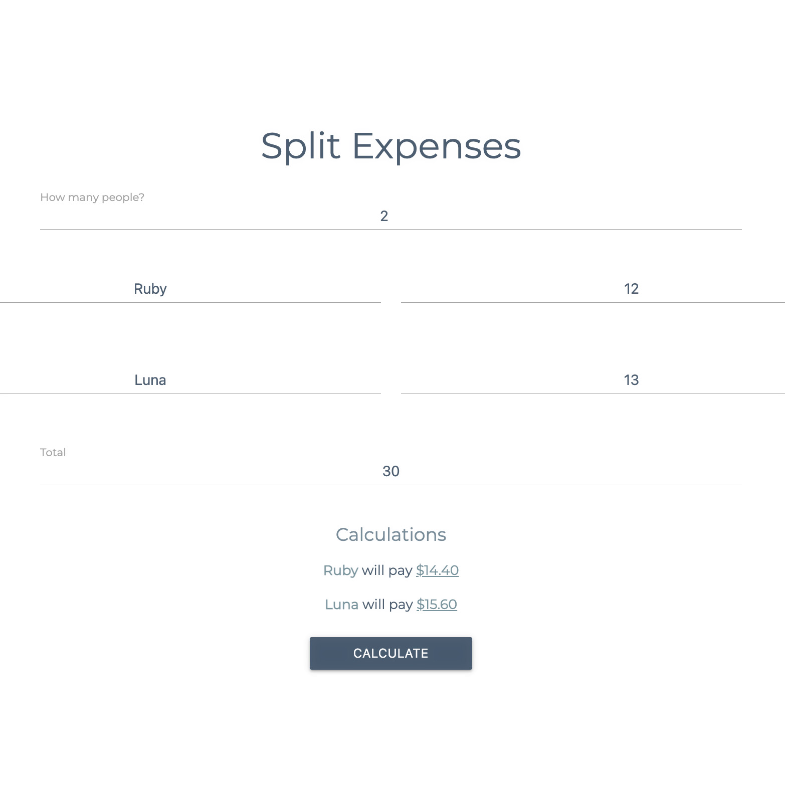

Featured Projects

01. The Kova
A website I made for a restaurant in New York City. I took all the photos on the website and added menu, location, and contact sections.
View Project

03. Elderly
Videochat designed and created for the elderly. Coded in Node.js, Express, HTML, and CSS.
View Project
04. Fresh Mangoes
A movies and TV review website based off of Rotten Tomatoes. Built in Java, React, MySQL, HTML, and CSS.
View Project
05. Pokemon Bot
Artificial intelligence bot that challenges players on pokemonshowdown.com in real time. Built with Java and Selenium.
View Project